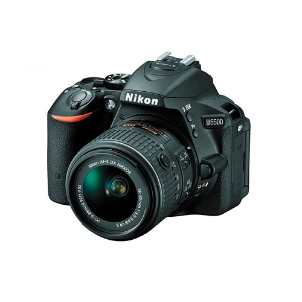

Nikon D5500 con 18-55mm
Q 7,490.00
24.2MP DX-Format CMOS Sensor
Procesador EXPEED 4
Sin Filtro de Paso Bajo
Pantalla de 3.2″ Angulo Variable Touchscreen
Full HD 1080p Video a 60 fps
Multi-CAM 4800DX
ISO 100-25600
39 Puntos de enfoque
Compatible con Wi-Fi
DX NIKKOR 18-55mm f/3.5-5.6G VR II Lens
Descripcion
La Nikon D5500 incorpora un monitor LCD de pantalla táctil, que le da un mayor control de la camara. Cuenta con un sensor de 24,2 megapixeles y un procesador de imagen EXPEED 4 que proporcionan imagenes de alta resolucion y video de 1080p Full HD con una notable baja sensibilidad a la luz de hasta ISO 25600 y hasta 5 fps. El filtro optico de paso bajo se omite en el sensor, lo que permite la nitidez adicional en ambas fotos y videos. La D5500 tiene un sistema de enfoque automatico de 39 puntos con nueve sensores en cruz y un sensor RGB de 2.016 pixeles para la medicion de la exposicion precisa en una amplia variedad de condiciones de iluminacion.